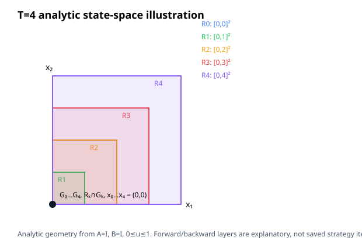

This new-comparison experiment runs reach-back and Strategy B on a vector integrator at state/control dimensions n=1,2 and horizons T=2,4. Controls satisfy 0≤uᵢ≤1; the state box is [-T,T]ⁿ at every stage; x₀=0; the terminal objective is minimize sumᵢ xᵢ[T].
Scope: every row below is included only when both strategies' emitted H relations pass the exact fixture-specific oracle. This proves the unique all-zero optimal history only for these four fixtures. It is not a general completeness, winner, speedup, or complexity claim.
| Case | Reach-back median (range) | Strategy B median (range) | Verified attempts | Verified pairs |
|---|---|---|---|---|
| n=1, T=2 | 5.453 ms (5.278 ms–5.639 ms) | 0.722 ms (0.688 ms–0.933 ms) | 12/12 | 6/6 |
| n=1, T=4 | 11.689 ms (11.128 ms–17.696 ms) | 0.799 ms (0.703 ms–1.642 ms) | 12/12 | 6/6 |
| n=2, T=2 | 12.155 ms (11.842 ms–12.780 ms) | 0.771 ms (0.721 ms–0.810 ms) | 12/12 | 6/6 |
| n=2, T=4 | — (—–—) | — (—–—) | 6/12 | 0/6 |
Timing covers SynthesisWorkspace::run(); process launch/setup are excluded. One excluded warmup pair and six alternating measured pairs were attempted per case. Bounds are 300 s CPU, 8 GiB address space, and 300 s wall time per strategy process; one backend thread and one driver worker were requested. For n=2,T=4, reach-back returned operation_rejected on its warmup and all six measured calls; Strategy B completed all seven. Those six one-sided results are inconclusive and produce no paired timing. Raw output, failures, attempts, and checks are retained in the bundle.
| Case | Strategy | Joint coordinates | Inequality rows | Equality rows | Nonzero H coefficients |
|---|---|---|---|---|---|
| n=1, T=2 | Reach-back | 5 | 14 | 4 | 22 |
| n=1, T=2 | Strategy B | 5 | 10 | 4 | 18 |
| n=1, T=4 | Reach-back | 9 | 22 | 6 | 36 |
| n=1, T=4 | Strategy B | 9 | 18 | 6 | 32 |
| n=2, T=2 | Reach-back | 10 | 28 | 7 | 44 |
| n=2, T=2 | Strategy B | 10 | 20 | 7 | 36 |
| n=2, T=4 | Reach-back | — | — | — | — |
| n=2, T=4 | Strategy B | — | — | — | — |
Coefficient counts are not allocated-byte measurements. The experiment varies state/control dimension, horizon and explicit stage-state bounds together; the factorial cases expose their observed relation-size effects but do not isolate sparse assembly, factorization, conversion, family-query, RSS or phase costs.
POSIX wait4 reports CPU and peak RSS for each isolated process, including startup and setup. One warmup pair per case is excluded; these values are separate from solver timings.
| Case | Strategy | Child CPU median (s) | Child CPU range (s) | Peak RSS median (KiB) |
|---|---|---|---|---|
| n1-t2 | reach-back | 0.009962 | 0.009513–0.010862 | 13748 |
| n1-t2 | strategy-b | 0.005040 | 0.004742–0.006456 | 13748 |
| n1-t4 | reach-back | 0.016143 | 0.015543–0.026289 | 13748 |
| n1-t4 | strategy-b | 0.005936 | 0.004933–0.010452 | 13748 |
| n2-t2 | reach-back | 0.016488 | 0.016214–0.017488 | 13748 |
| n2-t2 | strategy-b | 0.005099 | 0.004900–0.005470 | 13748 |
| n2-t4 | reach-back | 0.024602 | 0.023574–0.025779 | 13748 |
| n2-t4 | strategy-b | 0.005424 | 0.005220–0.005724 | 13748 |
Full receipts: resource summary and raw attempts.
The saved 2D geometry below is computed analytically from the fixture; it illustrates the state coordinates and exact forward/backward reachability of the zero-optimum case. It is not a trace of internal strategy iterates.

Source revision 2d5dd1afeb4e52a1f0cc79fbadb5ef29625e3f3f, binary SHA-256 676acda839c74b77b93e72e16fbbf6f44e735eaf829eda8da3431bf30dd948ca. Build provenance: JSON. Attempts: JSONL; checks: JSONL; summary: JSON; fixtures: n=1,T=2, n=1,T=4, n=2,T=2, n=2,T=4; hashes: SHA256SUMS.
Measurement source hashes: {"CMakeLists.txt": "2106dfebdf8998390d50607b1063f9085a74aba9f826b120e43a1ffd40332597", "check_dimension_ladder.py": "a724a60ff941fdb69e7cf9af05efa639eca2f3b1d46bfaadb8ccabc630eadfd0", "dimension_ladder.cpp": "ad94feb5dd56e722420a777b677c77f3fc42989a4a1e4309ff40eabdd5bc3039", "render_dimension_ladder.py": "627f2c66ae8c26daf1d3676698ec549a762c67486c6968c94daaec51cb2b6c43", "run_dimension_ladder.py": "e30e2ca76526280ff53aa82679ec6ac5fb9b1ddaa2b151504124b101c0759552", "summarize_dimension_ladder.py": "b43113be0010c87902a475e65bd085b8a409bc954e85fc9af102ac9124b3e4e4", "summarize_dimension_resource.py": "6010750cdcd3577a117ef33a357d03b31d15bb0831a140a7daca1a8ba2175b94"}